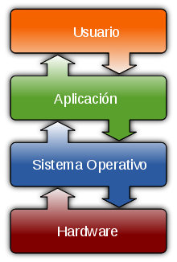
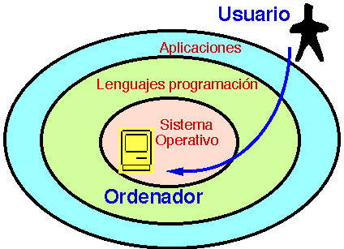
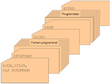

Sistema operativo


Interacción entre el SO con el resto de las partes.
{kind=link}

Un sistema operativo (SO) es un programa o conjunto de programas que en un sistema informático gestiona los recursos de hardware y provee servicios a los programas de aplicación, y corre en modo privilegiado respecto de los restantes.1
Nótese que es un error común muy extendido denominar al conjunto completo de herramientas sistema operativo, es decir, la inclusión en el mismo término de programas como el explorador de ficheros, el navegador web y todo tipo de herramientas que permiten la interacción con el sistema operativo, también llamado núcleo o kernel. Esta identidad entre kernel y sistema operativo es solo cierta si el núcleo es monolítico. Otro ejemplo para comprender esta diferencia se encuentra en la plataforma Amiga, donde el entorno gráfico de usuario se distribuía por separado, de modo que, también podía reemplazarse por otro, como era el caso de directory Opus o incluso manejarlo arrancando con una línea de comandos y el sistema gráfico. De este modo, al arrancar un Amiga, comenzaba a funcionar con el propio sistema operativo que llevaba incluido en una ROM, por lo que era cuestión del usuario decidir si necesitaba un entorno gráfico para manejar el sistema operativo o simplemente otra aplicación. Uno de los más prominentes ejemplos de esta diferencia, es el núcleo Linux, usado en las llamadas distribuciones Linux, ya que al estar también basadas en Unix, proporcionan un sistema de funcionamiento similar. Este error de precisión, se debe a la modernización de la informática llevada a cabo a finales de los 80, cuando la filosofía de estructura básica de funcionamiento de los grandes computadores2 se rediseñó a fin de llevarla a los hogares y facilitar su uso, cambiando el concepto de computador multiusuario, (muchos usuarios al mismo tiempo) por un sistema monousuario (únicamente un usuario al mismo tiempo) más sencillo de gestionar.3 (Véase AmigaOS, beOS o MacOS como los pioneros4 de dicha modernización, cuando los Amiga fueron bautizados con el sobrenombre de Video Toasters5 por su capacidad para la Edición de vídeo en entorno multitarea round robin, con gestión de miles de colores e interfaces intuitivos para diseño en 3D.
Uno de los propósitos del sistema operativo que gestiona el núcleo intermediario consiste en gestionar los recursos de localización y protección de acceso del hardware, hecho que alivia a los programadores de aplicaciones de tener que tratar con estos detalles. La mayoría de aparatos electrónicos que utilizan microprocesadores para funcionar, llevan incorporado un sistema operativo. (teléfonos móviles, reproductores de DVD, computadoras, radios, enrutadores, etc). En cuyo caso, son manejados mediante una Interfaz Gráfica de Usuario, un gestor de ventanas o un entorno de escritorio, si es un celular, mediante una consola o control remoto si es un DVD y, mediante una línea de comandos o navegador web si es un enrutador.

Perspectiva histórica
Los primeros sistemas (1945-1955) eran grandes máquinas operadas desde la consola maestra por los programadores. Durante la década siguiente (1955-1965) se llevaron a cabo avances en el hardware: lectoras de tarjetas, impresoras, cintas magnéticas, etc. Esto a su vez provocó un avance en el software: compiladores, ensambladores, cargadores, manejadores de dispositivos, etc.
A finales de los años 1980, una computadora Commodore Amiga equipada con una aceleradora Video Toaster era capaz de producir efectos comparados a sistemas dedicados que costaban el triple. Un Video Toaster junto a Lightwave ayudó a producir muchos programas de televisión y películas, entre las que se incluyen Babylon 5, Seaquest DSV y Terminator II.6
Problemas de explotación y soluciones iniciales
El problema principal de los primeros sistemas era la baja utilización de los mismos, la primera solución fue poner un operador profesional que lo manejase, con lo que se eliminaron las hojas de reserva, se ahorró tiempo y se aumentó la velocidad.
Para ello, los trabajos se agrupaban de forma manual en lotes mediante lo que se conoce como procesamiento por lotes (batch) sin automatizar.
Monitores residentes


Fichas en lenguaje de procesamiento por lotes, con programa y datos, para ejecución secuencial.
Según fue avanzando la complejidad de los programas, fue necesario implementar soluciones que automatizaran la organización de tareas sin necesidad de un operador. Debido a ello se crearon los monitores residentes: programas que residían en memoria y que gestionaban la ejecución de una cola de trabajos.
Un monitor residente estaba compuesto por un cargador, un Intérprete de comandos y un Controlador (drivers) para el manejo de entrada/salida.
Sistemas con almacenamiento temporal de E/S
Los avances en el hardware crearon el soporte de interrupciones y posteriormente se llevó a cabo un intento de solución más avanzado: solapar la E/S de un trabajo con sus propios cálculos, por lo que se creó el sistema de buffers con el siguiente funcionamiento:
- Un programa escribe su salida en un área de memoria (buffer 1).
- El monitor residente inicia la salida desde el buffer y el programa de aplicación calcula depositando la salida en el buffer 2.
- La salida desde el buffer 1 termina y el nuevo cálculo también.
- Se inicia la salida desde el buffer 2 y otro nuevo cálculo dirige su salida al buffer 1.
- El proceso se puede repetir de nuevo.
Los problemas surgen si hay muchas más operaciones de cálculo que de E/S (limitado por la CPU) o si por el contrario hay muchas más operaciones de E/S que cálculo (limitado por la E/S).
Spoolers
Hace aparición el disco magnético con lo que surgen nuevas soluciones a los problemas de rendimiento. Se eliminan las cintas magnéticas para el volcado previo de los datos de dispositivos lentos y se sustituyen por discos (un disco puede simular varias cintas). Debido al solapamiento del cálculo de un trabajo con la E/S de otro trabajo se crean tablas en el disco para diferentes tareas, lo que se conoce como Spool (Simultaneous Peripherial Operation On-Line).
Sistemas operativos multiprogramados
Surge un nuevo avance en el hardware: el hardware con protección de memoria. Lo que ofrece nuevas soluciones a los problemas de rendimiento:
- Se solapa el cálculo de unos trabajos con la entrada/salida de otros trabajos.
- Se pueden mantener en memoria varios programas.
- Se asigna el uso de la CPU a los diferentes programas en memoria.
Debido a los cambios anteriores, se producen cambios en el monitor residente, con lo que éste debe abordar nuevas tareas, naciendo lo que se denomina como Sistemas Operativos multiprogramados, los cuales cumplen con las siguientes funciones:
- Administrar la memoria.
- Gestionar el uso de la CPU (planificación).
- Administrar el uso de los dispositivos de E/S.
Cuando desempeña esas tareas, el monitor residente se transforma en un sistema operativo multiprogramado.
Aplicación informática
{kind=link}

OpenOffice.org Writer corriendo en el sistema operativo GNU/Linux.
En informática, una aplicación es un tipo de programa informático diseñado como herramienta para permitir a un usuario realizar uno o diversos tipos de trabajo. Esto lo diferencia principalmente de otros tipos de programas como los sistemas operativos (que hacen funcionar al ordenador), las utilidades (que realizan tareas de mantenimiento o de uso general), y los lenguajes de programación (con el cual se crean los programas informáticos).
Suele resultar una solución informática para la automatización de ciertas tareas complicadas como pueden ser la contabilidad, la redacción de documentos, o la gestión de un almacén. Algunos ejemplos de programas de aplicación son los procesadores de textos, hojas de cálculo, y base de datos.
Ciertas aplicaciones desarrolladas «a medida» suelen ofrecer una gran potencia ya que están exclusivamente diseñadas para resolver un problema específico. Otros, llamados paquetes integrados de software, ofrecen menos potencia pero a cambio incluyen varias aplicaciones, como un programa procesador de textos, de hoja de cálculo y de base de datos.
{kind=link}

Diagrama mostrando la ubicación y relación que tienen las aplicaciones frente al usuario final, y con otros programas informáticos existentes.
Otros ejemplos de programas de aplicación pueden ser: programas de comunicación de datos, Multimedia, presentaciones, diseño gráfico, cálculo, finanzas, correo electrónico, navegador web, compresión de archivos, presupuestos de obras, gestión de empresas, etc.
Algunas compañías agrupan diversos programas de distinta naturaleza para que formen un paquete (llamados suites o suite ofimática) que sean satisfactorios para las necesidades más apremiantes del usuario. Todos y cada uno de ellos sirven para ahorrar tiempo y dinero al usuario, al permitirle hacer cosas útiles con el ordenador (o computadora); algunos con ciertas prestaciones, otros con un determinado diseño; unos son más amigables o fáciles de usar que otros, pero bajo el mismo principio.
Distribución Linux
{kind=link}

Arquitectura de distribuciones Linux con componentes GNU (Concepto)
Una distribución Linux (coloquialmente llamada distro) es una distribución de software basada en el núcleo Linux que incluye determinados paquetes de software para satisfacer las necesidades de un grupo específico de usuarios, dando así origen a ediciones domésticas, empresariales y para servidores. Por lo general están compuestas, total o mayoritariamente, de software libre, aunque a menudo incorporan aplicaciones o controladores propietarios.
Además del núcleo Linux, las distribuciones incluyen habitualmente las bibliotecas y herramientas del proyecto GNU y el sistema de ventanas X Window System. Dependiendo del tipo de usuarios a los que la distribución esté dirigida se incluye también otro tipo de software como procesadores de texto, hoja de cálculo, reproductores multimedia, herramientas administrativas, etcétera. En el caso de incluir herramientas del proyecto GNU, también se utiliza el término distribución GNU/Linux.
En informática, un núcleo o kernel (de la raíz germánica Kern) es un software que constituye la parte más importante del sistema operativo.1 Es el principal responsable de facilitar a los distintos programas acceso seguro al hardware de la computadora o en forma básica, es el encargado de gestionar recursos, a través de servicios de llamada al sistema. Como hay muchos programas y el acceso al hardware es limitado, también se encarga de decidir qué programa podrá hacer uso de un dispositivo de hardware y durante cuánto tiempo, lo que se conoce como multiplexado. Acceder al hardware directamente puede ser realmente complejo, por lo que los núcleos suelen implementar una serie de abstracciones del hardware. Esto permite esconder la complejidad, y proporciona una interfaz limpia y uniforme al hardware subyacente, lo que facilita su uso al programador.
Internet es una red de redes de millones de ordenadores en todo el mundo. Pero al contrario de lo que se piensa comúnmente, Internet no es sinónimo de World Wide Web. La Web es sólo una parte de Internet, es sólo uno de los muchos servicios que ofrece Internet.
En realidad, Internet no es un medio de comunicación, sino muchos medios, una red que comprende distintos tipos y distintos sistemas de comunicación. La gente utiliza Internet para muy distintas finalidades. Muchas de ellas están relacionadas con diferentes y variadas categorías de comunicación, información e interacción. Algunas son nuevas y otras muy antiguas, pero estas categorías no se excluyen mutuamente, ya que no sólo los usuarios pueden participar en Internet mediante una combinación de comunicación, información e interacción al mismo tiempo, sino que también los distintos medios se entremezclan en el mismo canal.